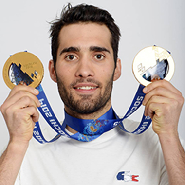

Martin Fourcade
French biathlete

Achievements
Olympic Games
| Event |
Individual |
Sprint |
Pursuit |
Mass start |
Relay |
Mixed relay |
| 2010 Vancouver |
14th |
35th |
34th |
Silver |
6th |
N/A |
| 2014 Sochi |
Gold |
6th |
Gold |
Silver |
8th |
6th |
| 2018 Pyeongchang |
5th |
8th |
Gold |
Gold |
5th |
Gold |
World Cup
- 7 overall World Cup titles (all-time record)
- 7 overall World Cup titles in a row (all-time record)
- 24 discipline World Cup titles (all-time record)
- 4 times the clean sweep of all five crystal globes won in one season (all-time record)
- 70 non-team World Cup victories (2nd to Bjørndalen, 94 victories)
- 14 non-team World Cup victories in one season (all-time record)
- 133 non-team World Cup podiums (2nd to Bjørndalen, 178 podiums)
- 70 non-team World Cup victories out of 235 non-team starts, 29.8% win rate, personal highest 29.8% win rate (all-time record)
- 133 non-team World Cup podiums out of 235 non-team starts, 56.6% podium rate, personal highest 56.7% podium rate (all-time record)
World Championships
- 11 gold medals, 9 silver medals and 4 bronze medals (3rd on the all-time list)
- 25 medals (2nd to Bjørndalen, 45 medals)
- 10 non-team gold medals, 4 non-team silver medals and 2 non-team bronze medals (2nd to Bjørndalen, 11 gold medals, 6 silver medals and 9 bronze medals)
- 16 non-team medals (2nd to Bjørndalen, 26 medals)
- 3 non-team gold medals and 1 non-team silver medal in a single World Championships (all-time record shared with Raphael Poirée)
- 6 World Championships in a row with at least 1 non-team gold medal (all-time record)